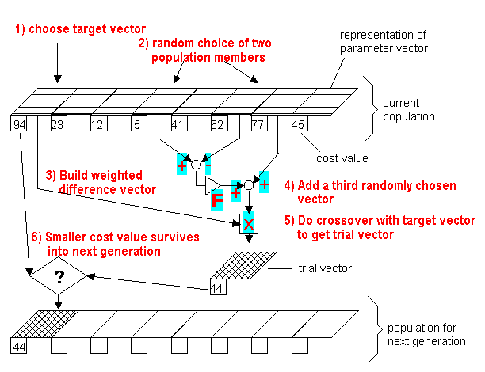

pagmo::de¶Differential Evolution Algorithm.
Differential Evolution is an heuristic optimizer developed by Rainer Storn and Kenneth Price.
‘’A breakthrough happened, when Ken came up with the idea of using vector differences for perturbing the vector population. Since this seminal idea a lively discussion between Ken and Rainer and endless ruminations and computer simulations on both parts yielded many substantial improvements which make DE the versatile and robust tool it is today’’ (from the official web pages....)
The implementation provided for PaGMO is based on the code provided in the official DE web site. pagmo::de is suitable for box-constrained single-objective continuous optimization.
NOTE The feasibility correction, that is the correction applied to an allele when some mutation puts it outside the allowed box-bounds, is here done by creating a random number in the bounds.
See: http://www.icsi.berkeley.edu/~storn/code.html for the official DE web site See: http://www.springerlink.com/content/x555692233083677/ for the paper that introduces Differential Evolution
Public Types
log_line_type¶Single entry of the log (gen, fevals, best, dx, df)
log_type¶The log.
Public Functions
de(unsigned int gen = 1u, double F = 0.8, double CR = 0.9, unsigned int variant = 2u, double ftol = 1e-6, double xtol = 1e-6, unsigned int seed = pagmo::random_device::next ())¶Constructor.
Constructs de
The following variants (mutation variants) are available to create a new candidate individual:
1 - best/1/exp 2. - rand/1/exp
3 - rand-to-best/1/exp 4. - best/2/exp
5 - rand/2/exp 6. - best/1/bin
7 - rand/1/bin 8. - rand-to-best/1/bin
9 - best/2/bin 10. - rand/2/bin
gen: number of generations. F: weight coefficient (dafault value is 0.8) CR: crossover probability (dafault value is 0.9) variant: mutation variant (dafault variant is 2: /rand/1/exp) ftol: stopping criteria on the x tolerance (default is 1e-6) xtol: stopping criteria on the f tolerance (default is 1e-6) seed: seed used by the internal random number generator (default is random)std::invalid_argument: if F, CR are not in [0,1] std::invalid_argument: if variant is not one of 1 .. 10 evolve(population pop) const¶Algorithm evolve method (juice implementation of the algorithm)
Evolves the population for a maximum number of generations, until one of tolerances set on the population flatness (x_tol, f_tol) are met.
pop: population to be evolved std::invalid_argument: if the problem is multi-objective or constrained or stochastic std::invalid_argument: if the population size is not at least 5 set_seed(unsigned int seed)¶Sets the seed.
seed: the seed controlling the algorithm stochastic behaviour get_seed() const¶Gets the seed.
set_verbosity(unsigned int level)¶Sets the algorithm verbosity.
Sets the verbosity level of the screen output and of the log returned by get_log(). level can be:
level generations.Example (verbosity 100):
Gen: Fevals: Best: dx: df:
5001 100020 3.62028e-05 0.0396687 0.0002866
5101 102020 1.16784e-05 0.0473027 0.000249057
5201 104020 1.07883e-05 0.0455471 0.000243651
5301 106020 6.05099e-06 0.0268876 0.000103512
5401 108020 3.60664e-06 0.0230468 5.78161e-05
5501 110020 1.7188e-06 0.0141655 2.25688e-05
level: verbosity level get_verbosity() const¶Gets the verbosity level.
get_gen() const¶Gets the generations.
get_name() const¶Algorithm name.
One of the optional methods of any user-defined algorithm (UDA).
get_extra_info() const¶Extra informations.
One of the optional methods of any user-defined algorithm (UDA).
get_log() const¶Get log.
A log containing relevant quantities monitoring the last call to evolve. Each element of the returned std::vector is a de::log_line_type containing: Gen, Fevals, Best, dx, df as described in de::set_verbosity
std::vector of de::log_line_type containing the logged values Gen, Fevals, Best, dx, df serialize(Archive &ar)¶Object serialization.
This method will save/load this into the archive ar.
ar: target archive.unspecified: any exception thrown by the serialization of the UDP and of primitive types.